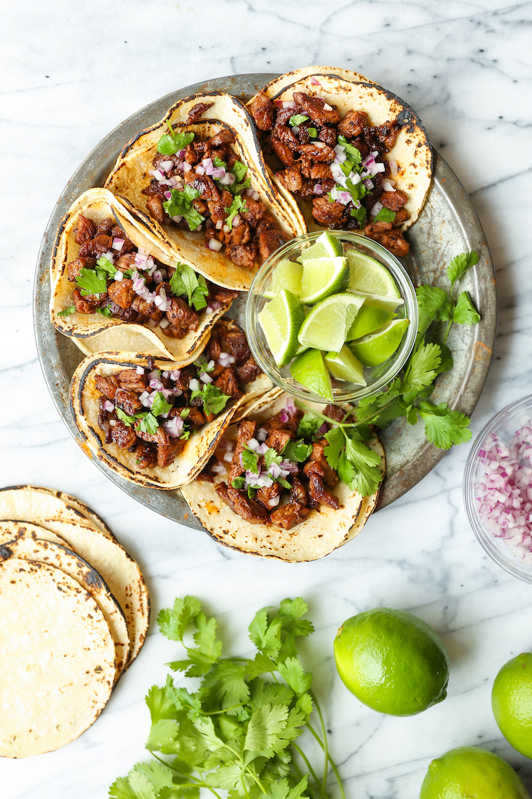

Culture of Tacos
As mentioned before, Tacos are apart of Mexican culture. They would be freshly made with corn tortillas and fish
back when tacos were first made. Now today, tacos are brought to more countries and are made daily by thousands.
When tacos were first being made, they were made by miners as fast and affordable food. Later in 1905, tacos would
be brought to the USA by mexican immigrants who would bring their lunches on jobsites as they work. Ultimately, tacos
would be a food that connected people. A few years later, American ingredients would be added with tacos, such as ground
beef and cheese, though tacos would still be enjoyed by thousands and now even more.
